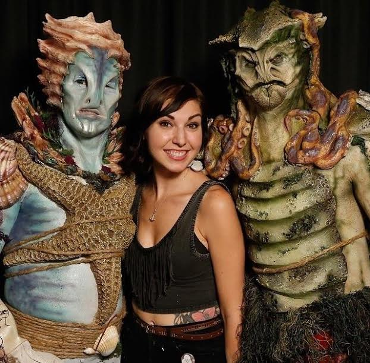
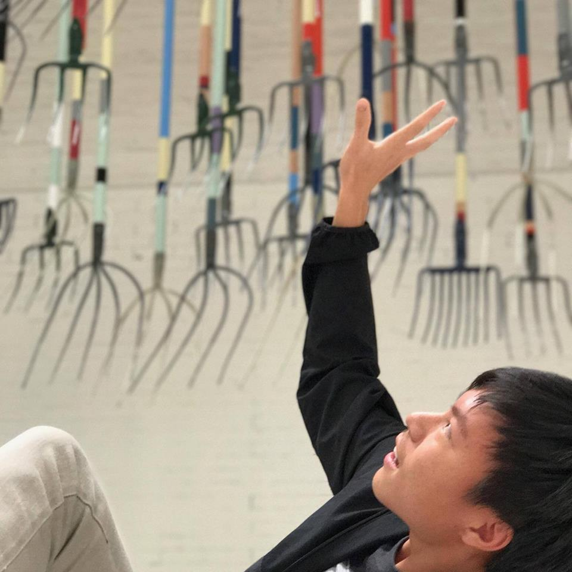
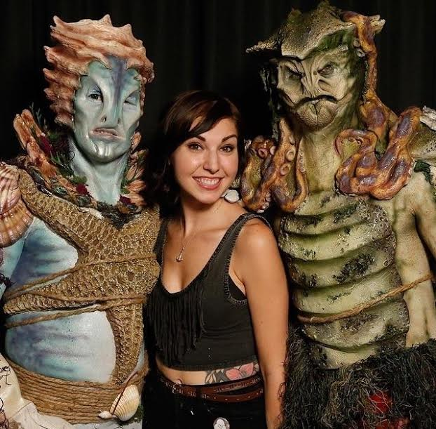
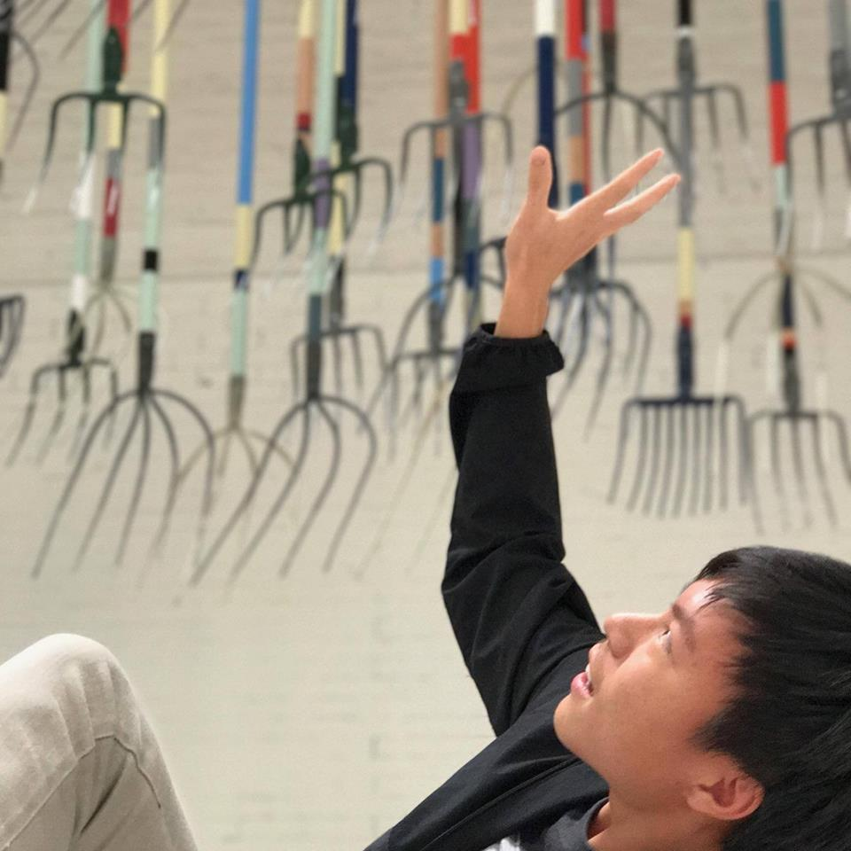

Hello! I'm Anthony Tan, a junior at Rowland High School. As an avid lover of plants, I grow a variety of succulents in my backyard. Other hobbies of mine include watching FaceOff (a special effects competition show on SyFy), visiting museums (one of which was called Fourteenth Factory), and watching movies with family (especially those by Marvel).
 


